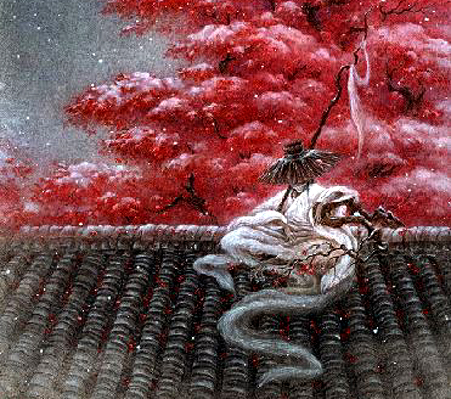

Creatures ▼

Mountain Ghost: According to Man of Simplicity (抱朴子) by Daoist Ge Hong, Mountain Ghosts have a size of a little boy with a single leg.
Reference
A. (2021, February 1). Mythical Creatures in Classics of Mountains and Seas. ALL THINGS CHINESE. https://www.viewofchina.com/mythical-creatures/
← go back